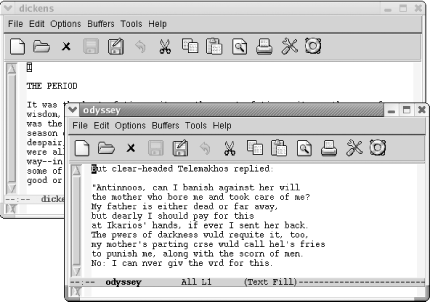
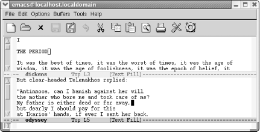

{% include JB/setup %}
{% raw %}
<div>
<div class="calibre24"></div><div class="book" xml:lang="en"><div class="book"><div class="book"><div class="book"><div class="calibre24"></div><h1 class="title"><a id="gnu3-CHP-4" class="calibre1"></a>Chapter 4. Using Buffers, Windows, and Frames</h1></div></div></div><p class="copyright">One of the most universally useful features of Emacs is the ability
to edit multiple buffers at once and to display more than one buffer
using windows and frames. The commands for doing this are simple; you
learn only a few commands and yet experience a tremendous boost in
productivity. The more you use multiple buffers, frames, and windows,
the more uses you'll think of for them.</p><p class="copyright">In this chapter, we discuss how to use buffers, windows, and frames.
First we cover the most commonly used commands, then, in the case of
buffers and windows, move on to some more esoteric commands. At the
end of the chapter, we discuss bookmarks, a method for marking your
place in a file.</p><div class="book" xml:lang="en"><div class="book"><div class="book"><div class="book"><h1 class="title"><a id="gnu3-CHP-4-SECT-1" class="calibre1"></a>Understanding Buffers, Windows, and Frames</h1></div></div></div><p class="copyright">Conceptually, Emacs is different from most applications in two
important ways. First, its window terminology is different. Second,
Emacs buffers are not tied to windows or frames, unlike most
applications.</p><div class="book" xml:lang="en"><div class="book"><div class="book"><div class="book"><h2 class="title1"><a id="gnu3-CHP-4-SECT-1.1" class="calibre1"></a>Windows Versus Frames</h2></div></div></div><p class="copyright">Let's get our terms
<a id="gnu3-CHP-4-ITERM-1979" class="calibre2"></a>
               <a id="gnu3-CHP-4-ITERM-1980" class="calibre2"></a>straight first. GUI windows are not
Emacs windows. Emacs calls GUI windows <span><em class="calibre7">frames</em></span>.
In part, this terminology is necessary because Emacs predates GUIs
and is still often used on terminals without GUI windows. Emacs
windows are split screens. We've seen them already;
for example, when you ask for keyboard help, you see it displayed in
a <code class="calibre21">*Help*</code> buffer at the bottom of your screen.
Figures <a class="calibre2" href="ch04.html#gnu3-CHP-4-FIG-1" title="Figure 4-1. Editing dickens and odyssey in Emacs frames">Figure 4-1</a> and <a class="calibre2" href="ch04.html#gnu3-CHP-4-FIG-2" title="Figure 4-2. Editing dickens and odyssey in Emacs windows">Figure 4-2</a>
show Emacs frames and Emacs windows. In <a class="calibre2" href="ch04.html#gnu3-CHP-4-FIG-1" title="Figure 4-1. Editing dickens and odyssey in Emacs frames">Figure 4-1</a>,
we see our <code class="calibre21">dickens</code> and <code class="calibre21">odyssey</code>
buffers in two separate frames. <a class="calibre2" href="ch04.html#gnu3-CHP-4-FIG-2" title="Figure 4-2. Editing dickens and odyssey in Emacs windows">Figure 4-2</a> shows a
single frame displaying two Emacs windows, one on top of the other,
showing these two files.</p><div class="figure"><a id="gnu3-CHP-4-FIG-1" class="calibre2"></a><div class="figure-contents"><div class="mediaobject"><a id="I_4_tt112" class="calibre2"></a></div></div><p class="title3"><b class="calibre25">Figure 4-1. Editing dickens and odyssey in Emacs frames</b></p></div><br class="book"/><div class="figure"><a id="gnu3-CHP-4-FIG-2" class="calibre2"></a><div class="figure-contents"><div class="mediaobject"><a id="I_4_tt113" class="calibre2"></a></div></div><p class="title3"><b class="calibre25">Figure 4-2. Editing dickens and odyssey in Emacs windows</b></p></div><br class="book"/><p class="copyright">From now on, when we say frame, we mean a separate GUI window. When
we say window, we mean a portion of the current Emacs display. And
from a practical standpoint, we emphasize that this is not an
either-or proposition. Even if you prefer multiple frames, you will
still use Emacs-style windows sometimes. Emacs itself will see to
that.</p></div><div class="book" xml:lang="en"><div class="book"><div class="book"><div class="book"><h2 class="title1"><a id="gnu3-CHP-4-SECT-1.2" class="calibre1"></a>Buffers: Independent of Windows and Frames</h2></div></div></div><p class="copyright">Now what about buffers? Essentially,
<a id="gnu3-CHP-4-ITERM-1981" class="calibre2"></a>
               <a id="gnu3-CHP-4-ITERM-1982" class="calibre2"></a>
               <a id="gnu3-CHP-4-ITERM-1983" class="calibre2"></a>
               <a id="gnu3-CHP-4-ITERM-1984" class="calibre2"></a>both
windows and frames are ways to display a buffer, which, as defined in
<a class="calibre2" href="ch01.html" title="Chapter 1. Emacs Basics">Chapter 1</a>, may contain a copy of a file or not.
Buffers may contain files. They may be Emacs-generated buffers, like
<code class="calibre21">*Messages*</code>, <code class="calibre21">*scratch*</code>, or
<code class="calibre21">*Help*</code>. Or they may be buffers that you create but
haven't written to a file.</p><p class="copyright">Most GUI applications tie certain files to certain GUI windows or, in
Emacspeak, frames. Emacs's detachment of buffers
from their display (whether a split display or a separate frame) is
more powerful and flexible. To be honest, most of the time we prefer
using a single Emacs frame and <a id="gnu3-CHP-4-ITERM-1985" class="calibre2"></a>switching between
buffers using <span><strong class="calibre5">C-x b</strong></span>.
It's much easier than mousing between frames or
dealing with a split screen, though each has its advantages in some
situations.</p></div><div class="book" xml:lang="en"><div class="book"><div class="book"><div class="book"><h2 class="title1"><a id="gnu3-CHP-4-SECT-1.3" class="calibre1"></a>More About Buffers</h2></div></div></div><p class="copyright">How do you know how many
<a id="gnu3-CHP-4-ITERM-1986" class="calibre2"></a>
               <a id="gnu3-CHP-4-ITERM-1987" class="calibre2"></a>buffers are active in Emacs
and what they are? There are three ways: the buffer list (which
appears in a window when you type <span><strong class="calibre5">C-x
C-b</strong></span>), the Buffers menu (which lists active buffers
<a id="gnu3-CHP-4-ITERM-1988" class="calibre2"></a>
               <a id="gnu3-CHP-4-ITERM-1989" class="calibre2"></a>and commands for navigating them), and the
Buffer pop-up menu (accessed by holding down <span><strong class="calibre5">Ctrl</strong></span> and clicking the left mouse button, which
lists buffers by mode).</p><p class="copyright">Emacs creates its own specialized buffers. The names for these
<a id="gnu3-CHP-4-ITERM-1990" class="calibre2"></a>
               <a id="gnu3-CHP-4-ITERM-1991" class="calibre2"></a>internal buffers generally have the format
<code class="calibre21">*</code>
               <em class="calibre7"><code class="calibre21">buffer
name</code></em>
               <code class="calibre21">*</code>. <code class="calibre21">*Help*</code>,
<code class="calibre21">*scratch*</code>, and <code class="calibre21">*Buffer List*</code>
are just a few of the buffers that Emacs creates.</p><p class="copyright">When you start Emacs, it generates two buffers:</p><table border="0" summary="Simple list" class="simplelist"><tr class="calibre22"><td class="calibre19">
                  <code class="calibre21">*Messages*</code>
               </td></tr><tr class="calibre22"><td class="calibre19">
                  <code class="calibre21">*scratch*</code>
               </td></tr></table><p class="copyright">
               <code class="calibre21">*Messages*</code> is a buffer where
<a id="gnu3-CHP-4-ITERM-1992" class="calibre2"></a>
               <a id="gnu3-CHP-4-ITERM-1993" class="calibre2"></a>Emacs
accumulates messages from its startup and from the minibuffer.
<code class="calibre21">*scratch*</code> is just what it sounds like: a temporary
scratchpad where you can type. It won't be saved
unless you explicitly write it to a file using <span><strong class="calibre5">C-x C-w</strong></span>.</p><p class="copyright">Of course, typically you edit files with Emacs. These files are then
copied into buffers of the same name. If you ask for help,
you'll also have a <code class="calibre21">*Help*</code> buffer.</p><p class="copyright">The number of buffers you
<a id="gnu3-CHP-4-ITERM-1994" class="calibre2"></a>can have really has no limit. Most of the
time, only one or two buffers are displayed, but even if you
can't see them, all the buffers you create in an
Emacs session are still active. You can think of them as a stack of
pages, with the one being displayed as the top page. At any time, you
can turn to another page (another buffer), or you can create a new
page.</p><p class="copyright">Each buffer has an associated <a id="gnu3-CHP-4-ITERM-1995" class="calibre2"></a>
               <a id="gnu3-CHP-4-ITERM-1996" class="calibre2"></a>
               <a id="gnu3-CHP-4-ITERM-1997" class="calibre2"></a>major mode
that determines much about how Emacs behaves in that buffer. For
example, text mode, designed for writing text, behaves differently
from Lisp mode, which is designed for writing Lisp programs.</p><p class="copyright">You can display multiple buffers in separate windows or frames or
both. The important thing to remember is that all the buffers you
create are active even if they are not currently displayed.</p></div></div></div></div>

{% endraw %}

